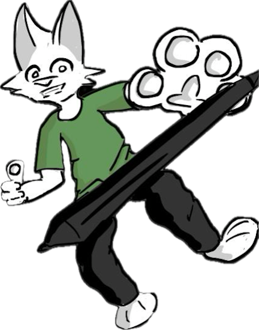

Hey, I’m Steve a Design and Animation Junior Student in Mercy University passionate about Art, Design and Creativity.
I specialize in 2D art and animation making my own projects and practicing by my self and working on College projects and learning new materials upgrade my skills.
Im a Motivated and enthusiastic Graphic Design and animator student with excellent project design abilities and innovative creative thinking. Able to multitask, resulting in the completion of graphic design projects with accuracy and efficiency, within deadlines. Can work both independently or as a member of a professional graphic design team, with a commitment to continuous learning.